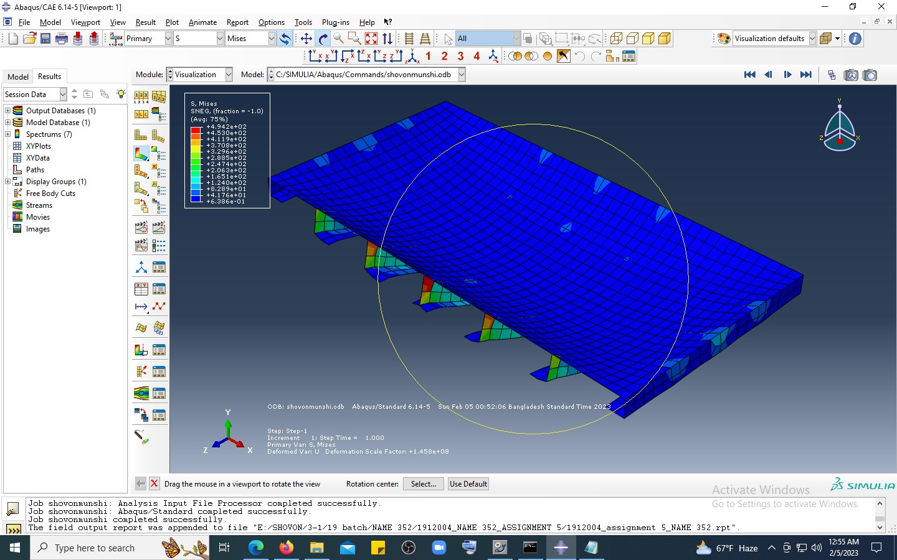
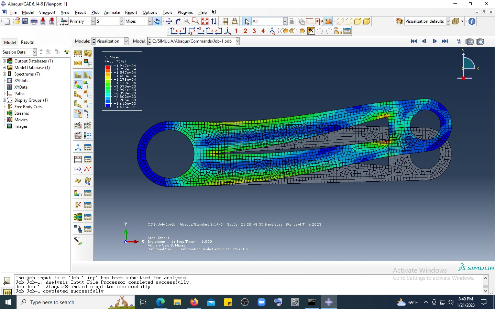
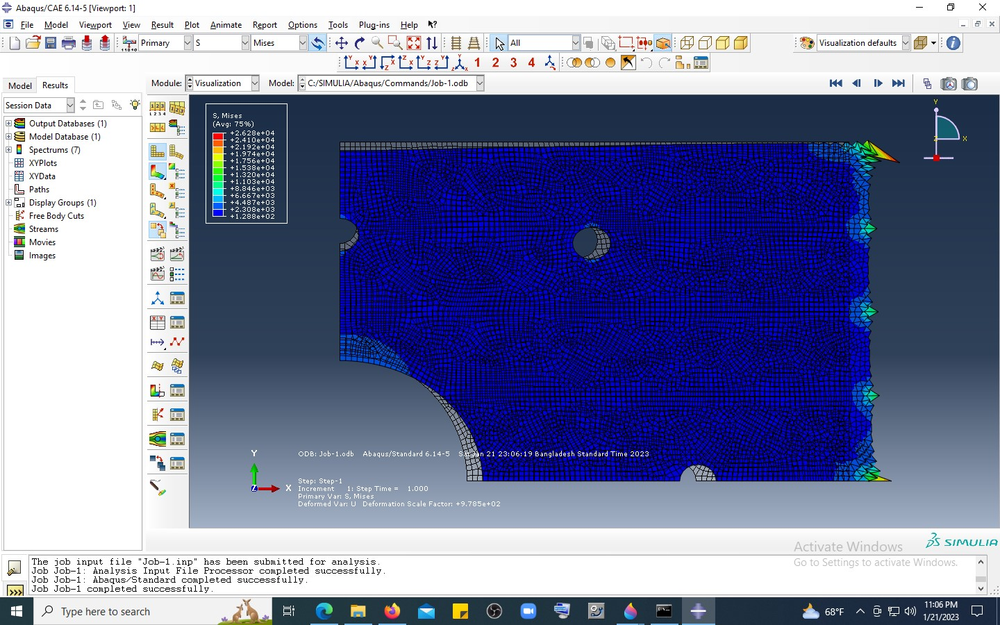

A selection of my research and design projects showcasing expertise in predictive analytics, machine learning, finite element analysis (FEA), optimization,and data-driven methodologies applied to complex engineering challenges.
Note : This page is not updated regularlarly. I tried to update my research page every eight to twelve months. Thank you.
Last Updated: November 15, 2025
Next Updated: October 20, 2026 (Insha Allah)
International Conference of Mechanical Engineering (ICME 2025)
Accepted • First Author
Authors: Shovon Munshi, Prof. Dr. Zobair Ibn Awal
This paper proposes a novel time-series–based mathematical framework that functions as an energy and environmental safeguard for Bangladesh’s inland waterway transportation system. The model identifies accident-prone periods associated with passenger flow, seasonal cargo movement, and festival-driven traffic surges, enabling proactive and targeted safety planning.
The findings support sustainable inland transport by reducing disruptions to this energy-efficient mode of transportation and strengthening progress toward long-term environmental and operational resilience.
Keywords: Time-series forecasting, predictive analytics, environmental prediction, energy-efficiency and sustainability
WMU Journal of Maritime Affairs (Springer Nature)
Under Review • Q2 Journal • First Author
Authors: Shovon Munshi, Prof. Dr. Zobair Ibn Awal
This study presents a foundational numerical prediction model for inland waterway accidents in Bangladesh, designed to support data-driven maritime policy development aligned with the Sustainable Development Goals.
Comparative evaluation of SARIMA, SARIMAX, and Holt–Winters models reveals the optimal forecasting approach and identifies critical high-risk periods, particularly during January and August, enabling informed safety planning and regulatory intervention.
Authors: Shovon Munshi, Prof. Dr. Zobair Ibn Awal
Keywords: SARIMA, SARIMAX, Holt–Winters, maritime safety, policy analytics
Supervisor: Prof. Dr. Zobair Ibn Awal
This study introduces the first numerical prediction model developed specifically for the inland waterways of Bangladesh., applying time-series forecasting to anticipate ship accidents and support safer river transport. Using accident data from 2018-2022, the study compared SARIMA, SARIMAX, and Holt-Winters models to identify the most effective forecasting approach.
The Holt-Winters model achieved the best accuracy, revealing clear seasonal accident peaks during January, July, and August. The findings show that accident risks are driven mainly by seasonal and operational factors rather than external events like lockdowns.
This data-driven research offers policymakers a scientific tool for proactive safety planning, resource allocation, and progress toward sustainable transport under SDG 3 and 9.
Academic Skills: Time series forecasting, Optimizations, policy implications, Data driven Research
Technical Skills: Python, MATLAB, data visualization
Supervisor: Prof. Dr. Zobair Ibn Awal
This ongoing research project develops a hybrid machine learning and optimization framework to predict accident severity in Bangladesh’s inland waterway transportation system.
The model integrates clustering and classification techniques to extract interpretable safety rules for navigation. Current work explores reinforcement learning–based feature selection and hyperparameter tuning to further improve predictive performance.
Academic Skills: Machine learning, optimization, interpretable models.
Technical Skills: Python, MATLAB, Reinforcement Learning
This solo project investigated the performance of modern machine learning models compared to classical statistical techniques for monthly accident time-series forecasting.
Several machine learning were implemented and evaluated against traditional approaches using standard metrics including MAPE and RMSE. Advanced statistical forecasting methods demonstrated superior predictive accuracy.
Academic Skills: Time-series forecasting, model comparison, performance evaluation
Technical Skills: Python, Machine learning, Explainable AI
Supervisor: Prof. Dr. Md. Shahidul Islam
This design project developed a modern 1000-ton cargo vessel tailored for Bangladesh's river routes, particularly the Dhaka-Chattogram corridor. The design emphasizes stability, fuel efficiency, and operational safety within shallow-water constraints.
Integrating advanced hull optimization and precise hydrostatic analysis, the vessel ensures better cargo capacity, reduced resistance, and compliance with inland safety standards. Special attention was given to crew comfort, space efficiency, and sustainability through smart general arrangement planning.
The outcome demonstrates how data-informed naval design can strengthen Bangladesh's inland logistics, lowering power requirement, hence, better fuel efficiency and supporting greener trade.
Academic Skills: Naval architecture, hydrostatics, stability analysis, Hull Parameter optimization
Technical Skills: Rhino 3D, AutoCAD, Excel-based computation

Supervisor: Prof. Dr. Md. Shahidul Islam
Designed and analyzed a 6m × 3m mild steel plate with nine strategically placed stiffeners (two T-shaped and seven L-shaped) to support a 20-ton distributed load. The objective was to achieve structural efficiency while minimizing material usage.
Using finite element analysis, I evaluated stress distribution and deformation under loading conditions. The maximum von Mises stress recorded was 121.766 MPa, significantly below the yield stress of mild steel (210 MPa), confirming structural integrity. Maximum deflection was minimal (102.670×10⁻¹² m), indicating excellent stiffness characteristics.
The optimized design successfully demonstrated that the plate could withstand the specified loading conditions while using minimal material, making it both lightweight and structurally efficient.
Academic Skills: Structural optimization, stress analysis, failure criteria (von Mises), material efficiency
Technical Skills: ABAQUS, Finite Element Analysis, Structural Design

Supervisor: Prof. Dr. Md. Shahidul Islam
Conducted structural optimization of a torque arm by systematically increasing the length of the central hole to reduce weight while maintaining structural integrity. The objective was to determine the maximum material removal possible without exceeding the yield stress of 210 MPa.
Finite element analysis revealed that the optimized design with a triangular hollow section achieved a maximum von Mises stress of 21.0888×10³ Pa, well below the yield stress. The maximum compressive and tensile stresses were 92.9274×10⁻⁹ Pa and 98.3880×10⁻⁹ Pa respectively.
This optimization successfully created the lightest and most efficient torque arm design capable of withstanding the applied loading conditions while using minimal material.
Academic Skills: Structural optimization, lightweight design, stress concentration analysis
Technical Skills: ABAQUS, Finite Element Analysis, Optimization

Supervisor: Prof. Dr. Md. Shahidul Islam
Investigated the effect of stress concentration around holes in a plate subjected to 2000 psi pressure. The analysis focused on a central 1.5-inch diameter hole surrounded by three 0.1-inch diameter holes, with material properties of E = 30×10⁶ psi and yield stress of 30,400 psi.
Finite element analysis showed maximum tensile stress of 772.871×10⁻⁶ psi and compressive stress of 358.158×10⁻⁶ psi, both well below the yield stress. The study revealed that under current loading conditions, the holes had minimal effect on overall stress distribution.
The analysis provided insights into potential failure mechanisms, noting that under increased loading, the circular hole could deform into an elliptical shape and potentially initiate cracks along the shortest axis (y-axis in this configuration).
Academic Skills: Stress concentration analysis, fracture mechanics
Technical Skills: ABAQUS, Finite Element Analysis